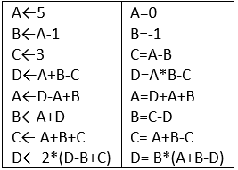

| Précédent | Accueil | Suivant |
Correction(Série N°1)
exercice N°1 Quelles seront les valeurs des variables A, B,C et D après exécution des instructions suivantes ?  |
| Correction A←5, B←11, C← 19, D← 28 |
exercice N°2 Ecrire un Algorithme qui demande à l'utilisateur de saisir son nom et de lui afficher son nom avec un message de bienvenue ! |
| Correction Algorithme Bienvenue Variable nom: chaine début écrire("Tapez votre nom : ") lire(nom) écrire("bienvenue ", nom) fin. |
exercice N°3 Écrire un algorithme permettant de saisir le nom et l'âge de l'utilisateur et afficher "Bonjour ..., tu as ... ans." en remplaçant les ... par respectivement le nom et l'âge |
| Correction Algorithme Bonjour Variable nom: chaine age : entier début écrire("Tapez votre nom : ") lire(nom) écrire("Tapez votre âge : ") lire(age) écrire("bonjour ", nom,": tu as ",age ," ans" ) fin. |
exercice N°4 Ecrire un algorithme qui calcule et affiche la somme et le produit de deux nombres réels |
| Correction Algorithme calcule Variable a,b: réel s,p: réel début écrire("Tapez le nombre a : ") lire(a) écrire("Tapez le nombre b : ") lire(b) s←a+b p←a*b écrire("la somme de a et b est ", s) écrire("le produit de a et b est ", p) fin. |
exercice N°5 Ecrire un algorithme qui calcule et affiche le périmètre d’un cercle (p=2*Pi*R) |
| Correction Algorithme perimetre Constante pi=3.14 Variable r: réel début écrire("Tapez le rayon du cercle : ") lire(r) p←2*pi*r écrire("Le périmètre est " , p) fin. |
exercice N°6 Ecrire un algorithme qui calcule et affiche la moyenne de 3 notes sachant que les coefficients de ces 3 notes sont respectivement 3 , 2 et 5 |
| Correction Algorithme moyenne Variable a,b,c: réel m :réel début écrire("Tapez la note1: ") lire(a) écrire("Tapez la note2: ") lire(b) écrire("Tapez la note3: ") lire(c) m←(a*3+b*2+c*5)/10 écrire("la moyenne est ", m) fin. |
exercice N°7 Ecrire un algorithme qui lit le prix HT d’un article, le nombre d’articles et le taux de TVA, et qui fournit le prix total TTC correspondant. Faire en sorte que des libellés apparaissent clairement. |
| Correction Algorithme prixtotal Variables HT,TVA,TTC: réel N: entier Début Ecrire(" taper le prix hors taxes ") Lire(HT) Ecrire(" taper le nombre d’articles " ) Lire(N) Ecrire("taper le taux de tva ") Lire(TVA) TTC← HT * N + HT*N*TVA Ecrire(" Le prix total TTC est " , TTC) Fin. |
exercice N°8 Etant données quatre nombres A, B, C et D représentant 4 chiffres entre 0 et 9. Ecrire un algorithme qui retourne le nombre N = ABCD (exemple A=5, B=8, C=2 et D=3, N= 5823). |
| Correction Algorithme nombre Variables A,B,C,D: entier N: entier Début Ecrire(" taper le nombre A ") Lire(A) Ecrire(" taper le nombre B " ) Lire(B) Ecrire("taper le nombre C ") Lire(C) Ecrire("taper le nombre D ") Lire(D) N← A*1000+B*100+C*10+D Ecrire(" le nombre est: " , N) Fin. |
exercice N°9 Connaissant le prix d’achat d’un produit, le frais de transport et son prix de vente. Ecrire un algorithme qui affiche le bénéfice réalisé |
| Correction Algorithme benifice Variables A, T, V: réel B: réel Début Ecrire(" taper le prix d’achat ") Lire(A) Ecrire(" taper le frais de transport " ) Lire(T) Ecrire("taper le prix de vente ") Lire(V) B← V – (A+T) Ecrire(" le bénifice est " , B) Fin. |
exercice N°10 Écrire un algorithme qui demander à l'utilisateur de saisir les longueurs et largeurs d'un rectangle, afficher sa surface. |
| Correction Algorithme SURFACE Variables L,F: réel S: réel Début Ecrire(" taper la valeur de la longueur ") Lire(l) Ecrire(" taper la valeur de la largeur " ) Lire(g) s← l * g Ecrire(" la surface est ", s, " Mètre carré") Fin. |
exercice N°11 Écrire un algorithme qui permet d’effectuer une permutation circulaire des valeurs de trois Variables x, y, z (la valeur de y dans x, la valeur de z dans y et la valeur de x dans z). N B: L’affichage se fait après l’échange (Permutation) |
| Correction Algorithme permutation Variables A,B,C , Z: entier Début Ecrire(" Taper le nombre A ") Lire(A) Ecrire(" Taper le nombre B " ) Lire(B) Ecrire("Taper le nombre C") Lire(C) Z←A A←B B←C C←Z Ecrire("A= ", A) Ecrire("B= ", B) Ecrire("C= ", C) Fin. |
exercice N°12 Ecrire un algorithme qui demande un nombre entier à l’utilisateur, puis affiche la valeur absolue de ce nombre |
| Correction Algorithme valeur_absolue Variable x,y: entier Début Ecrire(" Taper un nombre ") Lire(x) y←abs(x) Ecrire("la valeur absolue de ", x, "est" , y) Fin. |